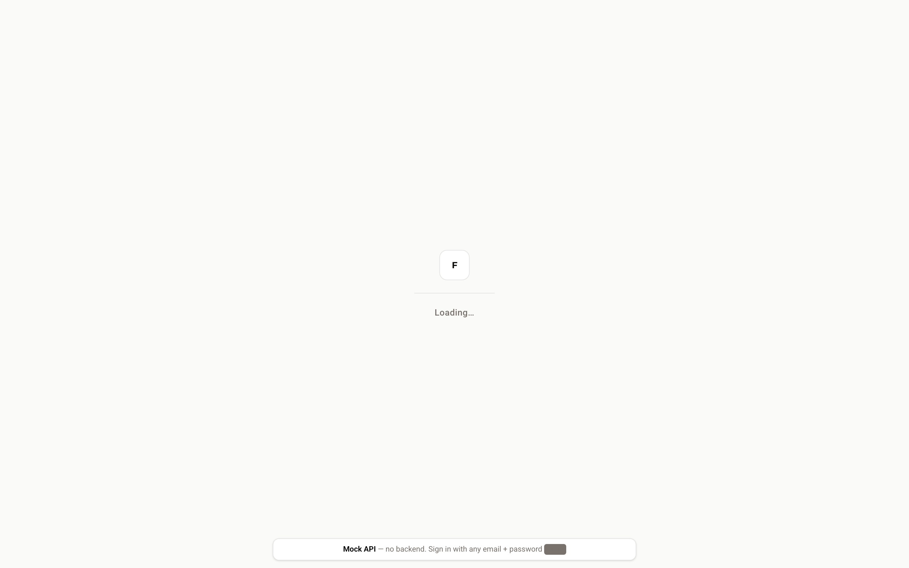
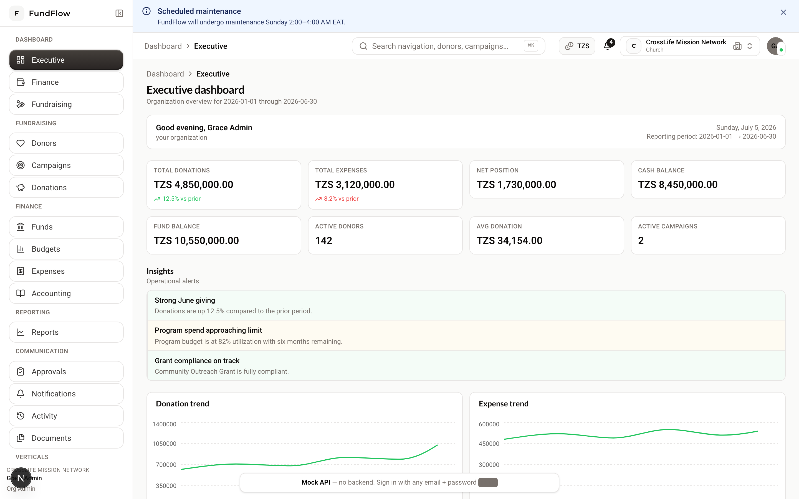
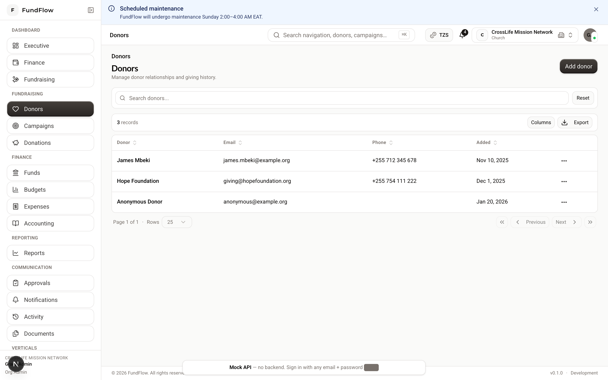
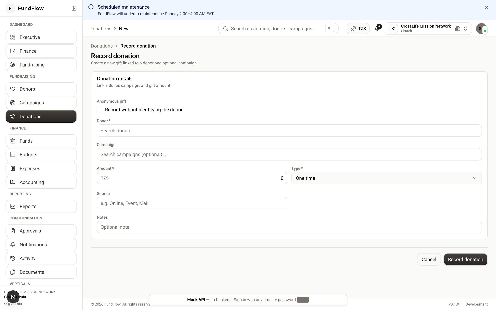
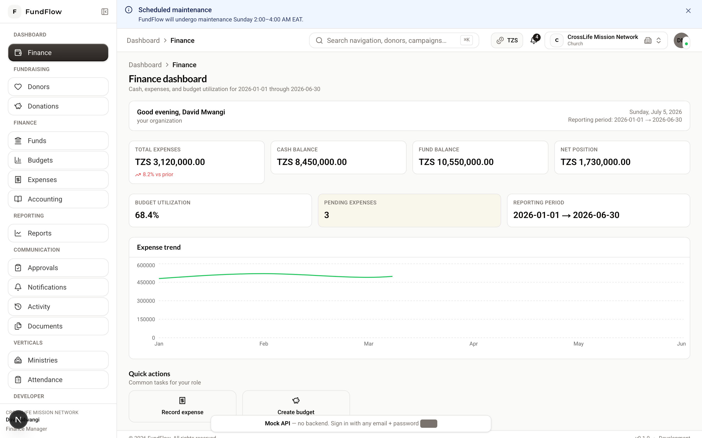
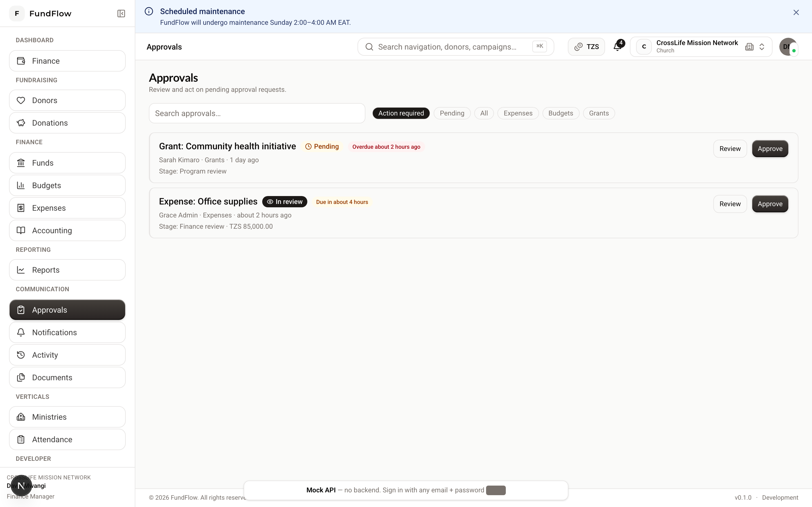

FundFlow ERP Documentation¶
Welcome to the FundFlow ERP documentation site — a financial accountability and resource management platform for nonprofits.
FundFlow helps churches, NGOs, charities, foundations, schools, and community organizations manage donations, expenses, funds, accounting, budgets, campaigns, and reporting in one auditable system.
Start here¶
-
Getting Started
Install the app, create an account, and learn the basics.
-
User Manual
Complete reference for all modules and workflows.
-
Role Guides
Step-by-step guides by job function.
-
Developer Docs
Architecture, API, and implementation phases.
User guides by role¶
| Guide | For |
|---|---|
| Getting Started | Everyone — first login and navigation |
| Organization Admin | Org owners — setup, users, settings |
| Fundraising | Donors, campaigns, donations |
| Finance | Funds, budgets, expenses |
| Accounting | Ledger, trial balance, period close |
| Reports | Financial and operational reports |
| Programs & Grants | NGOs — programs, grants, beneficiaries |
| Church | Ministries, attendance, offerings |
| School | Sponsorships and student records |
| Platform Owner | Super admin — multi-tenant management |
Quick links¶
| Topic | Document |
|---|---|
| Product requirements | PRD |
| Business workflows | Workflows |
| Roles & permissions | RBAC Matrix |
| API reference | Swagger / OpenAPI |
| Module map | Modules |
Run this site locally¶
Open http://127.0.0.1:8000.
Build static files for deployment:
Screenshots¶
UI screenshots live in docs/assets/images/screenshots/. Regenerate after UI changes:
# Terminal 1
cd frontend && npm run dev
# Terminal 2
cd docs/scripts && npm install && npx playwright install chromium
node capture-screenshots.mjs
See assets/images/README.md for the full file list.
See Documentation site setup for deployment options.
Screenshots gallery¶
Click any image to zoom (lightbox).
 |
 |
| Sign in | Executive dashboard |
 |
 |
| Donors | Record donation |
 |
 |
| Finance dashboard | Approvals inbox |
Regenerate screenshots: node docs/scripts/capture-screenshots.mjs (frontend must be running).